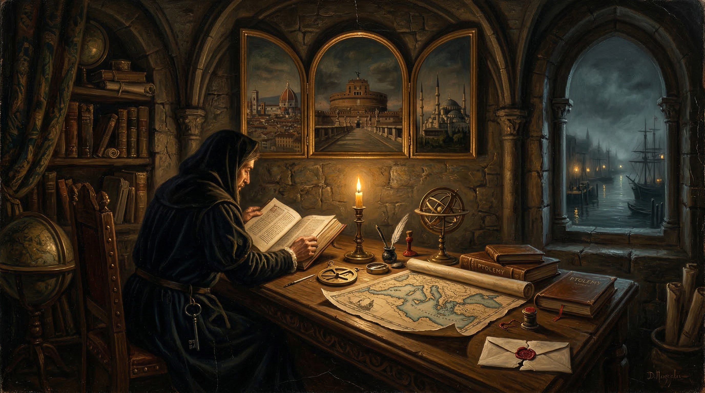

A Ribhian Games 2d10 Historical Occult Thriller · Europe 1540–1580
Velvet & Iron
Luxury and Brutality Are the Same Institution
The Beautiful World
A cardinal’s banquet illuminated by a thousand candles. A ceiling painted by the greatest master alive. A duchess’s jewels worth more than a city. Philosophical salons where the finest minds of Europe debate Plato over wine from Cyprus. Art as political statement. Beauty as power. The Renaissance in its final, anxious, magnificent flowering.
In Rome, beauty equals power most literally. A patron’s collection, a cardinal’s table, the commission of a new basilica — these are not personal taste. They are statements of factional alignment, declarations of wealth, and instruments of authority dressed in marble and gold.
What Lies Beneath
The interrogation chamber directly below the painted ceiling. The arrest warrant signed that morning by the hand that poured the wine. The Inquisitor’s file growing thicker with each conversation. The Bravi waiting in the alley outside the salon. Violence not as the opposite of beauty but as its constant companion — the same institution, seen from a different angle.
Every relationship has a price. Every piece of knowledge has a consequence. The world is not a clean Renaissance painting. It is fog-choked docks, candlelit conspiracies, and the smell of ink and blood in the same room.
Who Controls What Humanity Knows About Itself?
“The most dangerous objects in this world are never weapons. They are always documents.”
Everything In Motion. No Outcome Settled.
This window was chosen deliberately. Every faction believes it can still win. Every institution is in the middle of becoming something different from what it was. The characters arrive at the precise moment when the outcome is still unwritten.
Italy: Beautiful, Poisonous, Losing Its Centrality
Italy is not a country. It is a collection of competing states, most dominated by the Habsburgs or the papacy, unable to act without calculating which great power will react and how. The great Italian Renaissance is ending. Its confident humanism has curdled into Mannerist anxiety — the aesthetic of a culture that no longer believes its own optimism.
Florence under Medici control is the setting’s most important intellectual environment and the natural starting point for a full campaign. The Medici are simultaneously bankers with correspondent relationships in every European city, art patrons with agents evaluating across the continent, political operators with family members in the French court, and the intellectual sponsors of the Hermetic tradition through the Platonic Academy.
Florence is not Rome, which is crucial. Rome is where the Inquisition lives. Florence is where you can think dangerous thoughts with slightly more protection. The Medici have historically shielded their scholars to a degree Rome would not tolerate — so when Rome finally enters the picture, it lands with full weight.
The intellectual salon culture of Florence is the Euclidean Underground’s most comfortable Italian habitat. The line between a Medici-sponsored discussion of Platonic philosophy and a cell of Hermetic practitioners is thinner than either party would officially acknowledge.
The Vatican as physical space contains the setting’s great architectural symbol of the Velvet and Iron principle. The Sistine Chapel ceiling above. The Castel Sant’Angelo dungeons below. Everything beautiful about Counter-Reformation Christianity on the surface. Everything brutal directly beneath it. The Sack of Rome in 1527 — in living memory for every Italian adult — hangs over everything.
Every other faction has agents in Rome because this is where the Pope lives. The most surveilled city in the setting. A character who attracts Roman attention cannot simply flee to the next city and disappear. The apparatus is comprehensive, patient, and does not close files without resolution.
The papacy is not a monolithic institution. It is a collection of wildly different men occupying the same office in rapid succession, each bringing their own corruption, paranoia, genuine piety, or outright villainy. The contrast between individual popes makes the institution itself the dramatic engine of the entire setting.
The natural campaign arc moves through Florence and Rome in Act One — Florence for intellectual access and breathing space, Rome as the destination where everything crystallises into pressure. Then expands outward through Venice, and from there in multiple directions. Act Three requires the full map.
The Succession of Popes
Each pope transforms the institution they inherit. Understanding which version of the Inquisition you are dealing with is not academic — it determines whether you are fighting personal fanaticism, cynical politics, or slow bureaucratic inevitability. These distinctions change what is possible.
He knew exactly what was wrong and kept doing the wrong things while building the machinery that would eventually force reform. The contradiction is not hypocrisy — it is the human condition applied to the most powerful religious office in the world.
The Roman Inquisition ran on inertia rather than direction under Julius III — its procedures could be navigated more easily than under ideologically engaged popes. A window of relative safety that smart operators exploit.
The setting’s great symbol of reform’s impossibility. Palestrina composed the Missa Papae Marcelli in his honour — possibly the most beautiful music of the century, as if art was doing what governance could not.
Created the Index Librorum Prohibitorum. Imprisoned Cardinal Morone in the Castel Sant’Angelo. Established the Roman Ghetto. Elevated his nephew Carlo Carafa — a violent criminal eventually executed by the next pope, the only cardinal executed in the 16th century. There is no gap between what he believed and what he did. This makes him impossible to manipulate through the hypocrisy that works on other powerful figures.
Excommunicated Elizabeth I in 1570. Organized the Holy League that won the Battle of Lepanto. Under Paul IV the Inquisition was factional politics wearing theological clothing. Under Pius V it became genuine belief applied systematically. There is no cynicism to exploit, no personal interest to engage. Characters opposing the Inquisition under Pius V are not fighting a corrupt institution. They are fighting a sincere one.
The Gregorian Calendar reform deletes ten days from the year. Massively expands the Jesuit network. Celebrates the St. Bartholomew’s Day Massacre with a Te Deum — a bureaucratic assessment that the elimination of French Protestant leadership is a favourable outcome. The Inquisition under Gregory XIII opens files and they do not close.
The Machinery of Compromise
The illegitimate children, mistresses, and sexual conduct of the papal court are not merely scandal. They create a specific social architecture of leverage, intelligence, and blackmail that is the Medici Web’s most productive operating environment.
The Papal Bastards
Direct access to the most powerful men in Rome through blood relationship. No official standing. They know everything — the conversations at the family table, the visitors who come at night, the letters that arrive sealed. They have grievance and nothing to lose. The most dangerous informants in the zone.
The Mistress Networks
Senior churchmen maintaining mistresses maintained entire households that operated as parallel intelligence networks — knowing who visited, what was discussed, what the cardinal needed and could not officially request. A woman who has maintained a senior churchman’s household for a decade knows more about Vatican politics than most cardinals.
The Blackmail Economy
Documentation of a cardinal’s household arrangements is the Medici Web’s natural territory. Pius V’s attempt to clean up Rome’s moral life was partly a counter-intelligence operation. The Index prohibits books. The Inquisition investigates doctrine. Neither addresses the real currency of Roman power.
Castel Sant’Angelo
Originally Hadrian’s mausoleum. Converted to a papal fortress. Connected to the Vatican by the Passetto di Borgo — a secret elevated corridor used by popes to flee during emergencies, including the Sack of 1527. High-status political prison cells fill its lower levels.
Imprisoning a cardinal here is a sophisticated political tool. Heresy charges disqualify him from participating in a conclave — effectively allowing an Inquisitor-Pope to choose his own successor by removing a candidate from the field.
Eight Zones. One Loop. No Safe Territory.
The setting traces a great loop from northwest to east to south and back — the inside being the ancient Mediterranean, the outside the Atlantic edge where New World money flows in and destabilizes every political calculation. Each zone has enough material for a complete campaign with its own tone and primary dangers.
The Heresy Track
Multiple Parallel Institutional Heat
Every character maintains separate suspicion scores with each major authority. The Spanish Inquisition does not automatically know what Rome knows. Characters cannot rely on this isolation permanently — but they can exploit it strategically.
Scores do not reduce over time. They reduce through formal resolution, recantation, high-value service to the institution, or institutional change when a new pope resets priorities. A file that opens does not close without resolution.
Factions
Mathematical Occultism
Magic in Velvet & Iron is not fantasy magic. It is the Goetia as precision occult science. To bind a spirit or invoke a Hermetic force, a character does not cast a spell. They calculate. The tiers escalate in danger as they escalate in power — and the Heresy Track accumulates accordingly.
The Paths
Velvet & Iron uses the Core 2d10 Paths with period-appropriate names and flavour. The three Pillars remain — Martial, Mentalist, and Karmic — but every Path is expressed through the world of 1540–1580 Europe. A Templar serves a Pope, not a dungeon. A Troubadour navigates a cardinal's salon, not a tavern. A Bloodletter becomes a Bravo or a Condottiere.
Heritages
Velvet & Iron is primarily a human world. The overwhelming majority of characters are people navigating the most dangerous forty years in European history through wit, violence, faith, and calculation. Three marked heritages exist at the edges — each grounded in the period's actual folk belief, medical reality, and the Inquisition's very specific interest in what they might represent.